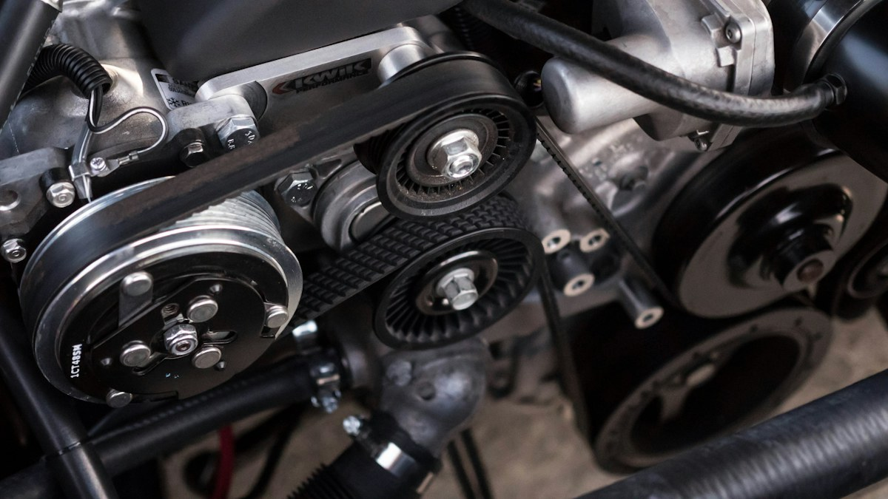

Revisão preventiva
Inspeção dos itens combinados com o cliente.
Sob avaliação
Centro automotivo / modelo 04
Serviços claros e atendimento organizado. Encontre a manutenção que procura e simule uma solicitação de avaliação.

Ilustração conceitual · TORQUEExplore / Oficina mecânica
Explore as especialidades deste centro automotivo fictício.
Inspeção dos itens combinados com o cliente.
Serviço conforme especificações do veículo.
Avaliação de componentes e funcionamento.
Inspeção de ruídos, folgas e desgaste.
Avaliação e ajuste de geometria.
Verificação de rodas e conjunto de pneus.
Nenhuma opção encontrada. Experimente outra categoria ou busca.
TORQUE / a proposta
Recepção, avaliação, apresentação do orçamento e execução autorizada. Este modelo explica um fluxo de serviço sem inventar certificações ou avaliações de clientes.
Uma experiência simples
Navegue pelo catálogo e encontre o que combina com sua necessidade.
Use os filtros e abra uma simulação, sem enviar dados para uma empresa.
Cores, conteúdo, imagens e serviços podem seguir a identidade do seu negócio.
Perguntas frequentes
Não. TORQUE é uma marca fictícia, criada para demonstrar um site. Os serviços, preços, imóveis e imagens são ilustrativos.
Não. Tudo acontece somente nesta página. Não há envio de formulário, cobrança ou reserva real.
Sim. A proposta visual e os conteúdos podem ser adaptados. Integrações reais, como agenda, pagamentos e WhatsApp, precisam ser configuradas para cada empresa.
Experimente o modelo
Teste a experiência sem compromisso ou envio de dados.
Fotografias ilustrativas de referência. Marcas, ofertas e experiências deste modelo são fictícias.